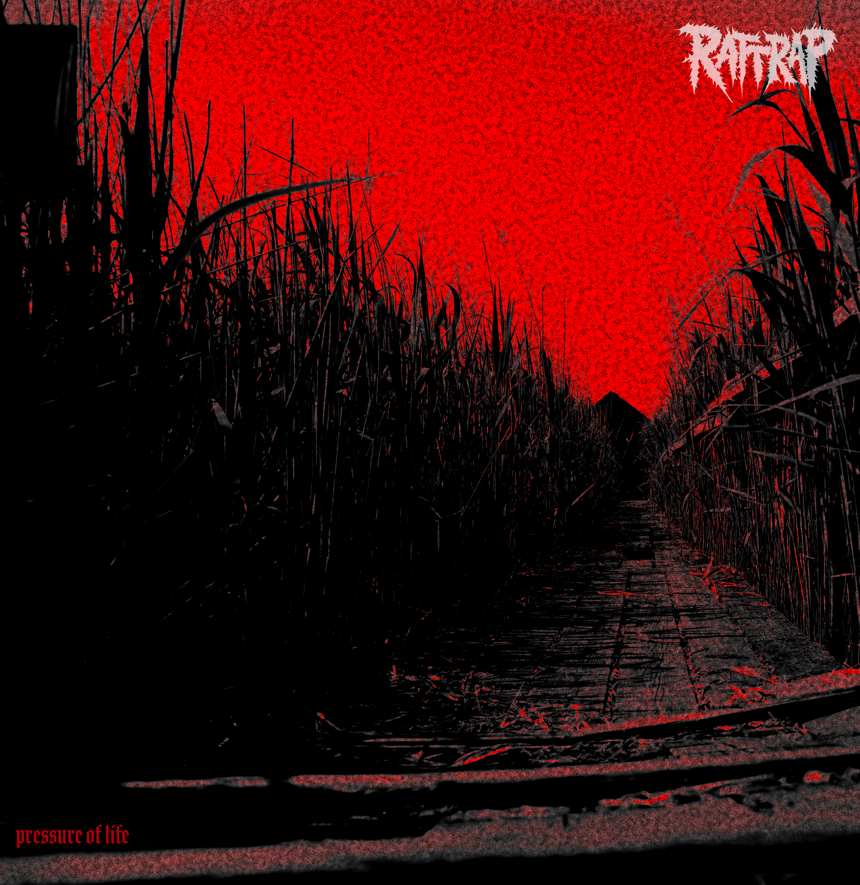

Vorab gehört
RATTRAP - Pressure of Life

Vorab gehört: Pressure of Life erscheint offiziell am 13. November 2026. Die Musik wurde RandaleFUNK vor der Veröffentlichung zur Verfügung gestellt.
Da schreibt mir Tobi von RATTRAP aus Baden-Württemberg und kündigt metallischen Hardcore-Punk an.
Also YouTube auf, Bandnamen eingeben und reinhören.
FUCK!
Schleimiger Pop-Rock!
Bitte was? DAS soll Hardcore-Punk sein? Was haben die denn bitte für eine Vorstellung von Hardcore?
Zum Glück habe ich die Mail noch einmal genauer gelesen und mir die Songs über WeTransfer gezogen. Denn offenbar gibt es mehrere Bands namens RATTRAP. Der Pop-Rock, den ich da gehört hatte, stammt von einer völlig anderen Band und hat mit den RATTRAP aus Tobis Mail nichts zu tun.
Die Jungs aus dem Zollernalbkreis haben mit dem Pop-Rock-Gedudel jedenfalls herzlich wenig zu tun.
Hier gibt’s ordentliches Geknüppel!
Ihr Debüt „Pressure of Life“ erscheint am 13. November 2026. RandaleFUNK durfte vorher reinhören.
Eingestiegen bin ich mit „Empty Cage ohne“. Wobei ich dezent vermute, dass das „ohne“ eigentlich nicht zum Songtitel gehört. Genauso wenig wie das „mit Übergang2“ bei „Lies“.
Ich hoffe jedenfalls, dass die Zusätze nicht irgendwann auf den Streamingplattformen landen. Wobei ... lustig wär’s schon.
Schon bei den ersten Takten frage ich mich: Höre ich da eine Doublebass? Jedenfalls wird ziemlich schnell klar, dass hier niemand vorhat, mich musikalisch zu schonen.
Also schnappen wir uns „Lies“.
Da steckt ordentlich Metal drin. Und ich sitze mal wieder vor dem Problem, dass ich diese Musik unbedingt irgendwo einordnen möchte.
Hardcore? Metal? Punk?
Gerade bei so aggressiven Nummern verschwimmen für mich die Grenzen. Geht euch das eigentlich auch so? Ihr hört einen Song, findet das Ganze ziemlich geil und habt trotzdem keine Ahnung, in welche Schublade ihr ihn stecken sollt?
Bei RATTRAP geht es mir jedenfalls genau so.
„Lies“ hat mich mit großen Augen vor der Tastatur sitzen lassen. Wobei Sitzen bei diesem Geknüppel ohnehin eine Herausforderung ist.
Weiter mit „Dead Trees“.
Und da muss ich tatsächlich passen.
So sehr ich Hardcore, Metal und Punk mag und mich in all diesen Ecken musikalisch zu Hause fühle: Das hier überschreitet meine persönlichen Hörgewohnheiten.
Nicht, weil die Nummer schlecht wäre. Im Gegenteil, das ist verdammt gut gemacht. Aber irgendwann komme ich an einen Punkt, an dem ich zwar noch anerkennend nicken kann, musikalisch jedoch nicht mehr mitkomme.
Vielleicht bin ich einfach ein Weichei.
Kann ich mit leben.
„Pressure of Life“ ist jedenfalls ein ziemlich heftiger Einstand für eine Band, die sich erst 2026 gegründet hat. Und auch wenn mir persönlich nicht jede Nummer liegt, bin ich froh, dass ich nach meinem ersten YouTube-Schock doch noch die richtige Band gefunden habe.
Wer es deutlich härter mag als ich, sollte sich RATTRAP unbedingt anhören.
Und damit ihr nicht ebenfalls bei irgendwelchen Pop-Rock-Namensvettern landet, gibt’s hier den richtigen Weg: